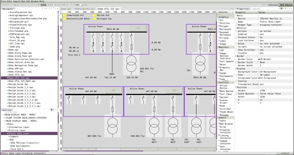
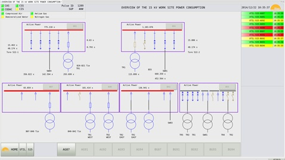
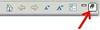
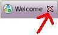
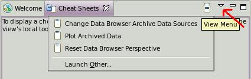
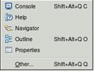
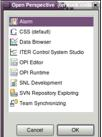

ITER Control System Studio
Introduction
What is CS-Studio (CSS) - Control System Studio?
Various control-system tools combined into a consistent environment.
-
Tools for the developer to develop an operator interface or a state machine:

-
And tools for the operator to monitor the process:

Welcome
When you start CSS for the very first time, you will see a "Welcome" screen
that includes an "Overview", "What's New", "First Steps" and "Samples". The Overview might have led
you to this help screen.
Use the "Restore" button on the window border to make the "Welcome" screen
smaller, or close it by pressing the "X" button next to the title.

The "restore" button

The "close" button
If you later want to return to the "Welcome" screen to read more,
you can access it via the "Help" menu -> subsection "Welcome".
Help
Use the "Help" menu -> subsection "Help Contents" to open the help pages,
and read the CSS Applications related entries, CSS Changelog or CSS Core content. The current page is under CSS ITER topic.
Cheat Sheets...
"Help -> Cheat Sheets..." contains step-by-step
instructions for selected tasks. Use the 'triangle'
in the Cheat Sheets view panel to open the drop-down
list of available sheets

Cheat Sheet
CS-Studio Graphical User Interface (GUI) concepts
-
Editors: typically used to “edit” the data it displays - text editor, operator interface OPI editor, state machine SNL editor, plot editor.
An Editor saves changes only when you explicitly choose to save.
-
Views: Is a window-like element that typically provides a “view” on data.
Is resizable and can be freely arranged within the main window.
May provide toolbars that can be used to configure the view

-
Perspectives: Arrangement of various views/editors. Certain menu or toolbar entries can be associated to a perspective

At ITER, contact codac-support@iter.org.
Refer to
http://controlsystemstudio.org/index.html
for general CS-Studio information.